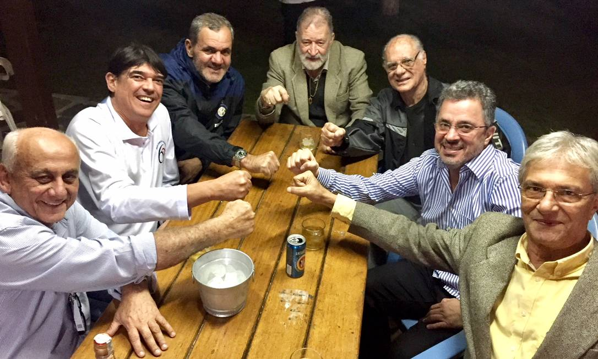
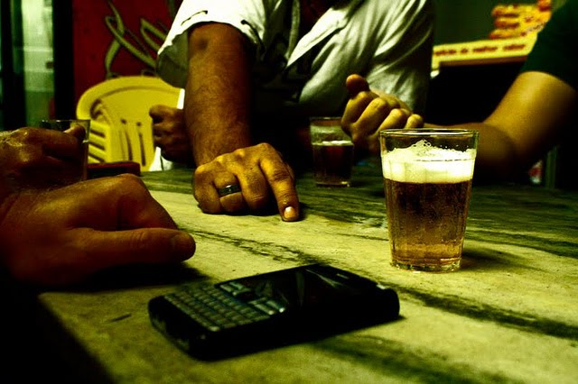

Sobre o jogo
A porrinha ou purrinha (expressão brasileira) é um jogo em que se usam pedaços de papel, moedas, feijões ou palitos quebrados (algo pequeno que possa ficar facilmente escondido dentro da mão). Pode ser jogado com várias pessoas. Cada pessoa terá 3 moedas consigo e terá de escolher uma quantidade a colocar na mão. Depois, todos deixam a mão fechada sobre a mesa, e cada jogador aposta quanto dará "palpite" no sentido horário a soma de todas as moedas que possa estar na mão de cada um e não pode repetir a pedida ou palpite. Ganha aquele que acertar o total de moedas da rodada no "palpite", de três vitórias simples, menor de três ou no tiro "acertou a soma ganha a mão". Existe uma combinação em algumas regiões do Brasil em que não se pode mostrar "zero" na primeira mão. Contudo, essa regra não pode ser validada, pois em todas as mãos deve existir a mesma chance de acerto entre os participantes. O Jogo de Porrinha ou Purrinha é um jogo tradicional de bares e botecos e bodegas da boêmia carioca, em que o perdedor paga a cerveja. Existe uma variação desse jogo, bem menos comum pelo Brasil, que consiste em que a cada rodada diminui um palito a cada vitória e um participante e o perdedor da última rodada (onde perde 2) não deverá "pagar uma prenda".
Fatos interessantes
Ao contrário do que muitos pensam, a purrinha ou palitinho (outro nome para a porrinha) exige raciocínio, e quando jogado com duas pessoas isto é ainda mais preponderante. Quem dá o palpite primeiro está em desvantagem, pois o adversário poderá extrair alguma informação do referido palpite. Exemplo: se um jogador pede quatro, o adversário sabe que ele tem pelo menos um ponto na mão, o que já ajuda consideravelmente na hora de formular seu palpite. Outra coisa notável é quando um desafiante pede seis "tudo". Quando isto acontece, o outro já sabe que ele tem três na mão e, somando com sua própria quantidade poderá dar o palpite exato. Entretanto, duas coisas podem acontecer: uma delas é os dois terem três moedas, e por pura sorte aquele que pediu seis acertou; ou senão o que pediu seis, sem ter 3 na mão e o fez apenas para prejudicar seu adversário, fazendo ele perder o jogo apesar de sacrificar sua jogada.
